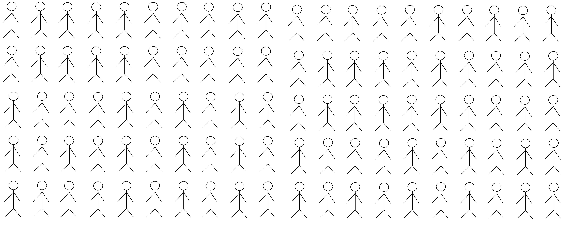
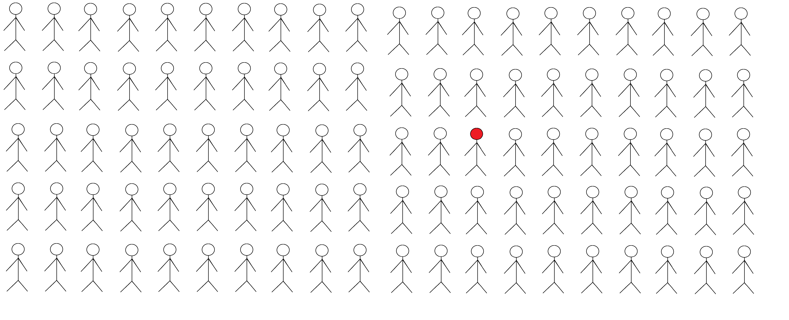
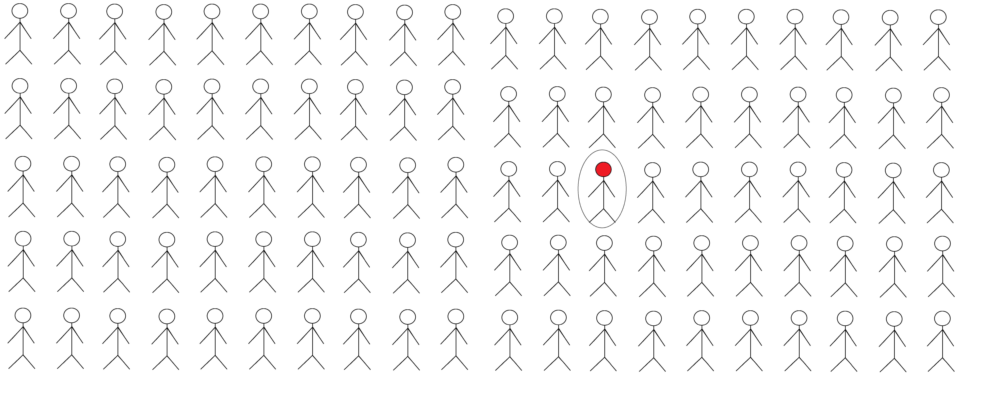
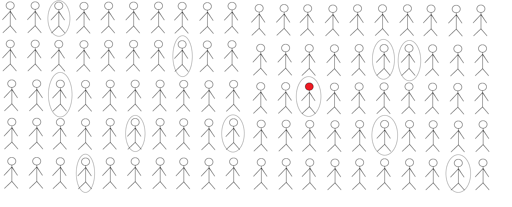

POLS 3220: How to Predict the Future
Many federal law enforcement and national security agencies use polygraph tests to screen potential hires.
For this exercise, let’s make the following assumptions:
1% of applicants for a job at a national security agency are secretly foreign intelligence assets. You want to avoid hiring these people.
Polygraph screening is quite good at detecting lies. If you ask someone whether they are a spy, it will correctly identify whether they are telling the truth or lying 90% of the time.
If an applicant fails this question on a polygraph screening, what is the probability that they are a spy?
It can be helpful to think about this problem in terms of frequencies.
It can be helpful to think about this problem in terms of frequencies.
It can be helpful to think about this problem in terms of frequencies.
It can be helpful to think about this problem in terms of frequencies.
It can be helpful to think about this problem in terms of frequencies.
Here’s the problem as a probability tree:
Let’s use this example to derive Bayes Rule, a formula for updating predictions in light of evidence.
Before observing any evidence from the polygraph test, our prior odds on an applicant being a spy are 1:99.
We observe the applicant fail the polygraph test. This result is 9 times more likely if they are a spy than if they are not a spy. Call this value the strength of evidence.
So after observing this evidence, our predicted odds that the applicant is a spy should be exactly 9 times higher.
Our posterior odds are 9:99, or 1:11.
\[ \text{Posterior Odds} = \text{Prior Odds} \times \text{Strength of Evidence} \]
In our example:
\[ \text{Posterior Odds} = \underbrace{1:99}_\text{Prior Odds} \times \underbrace{9:1}_\text{Strength of Evidence} = 1:11 \]
Remember, to convert odds to probability, divide \(\frac{p}{p+q}\). So our posterior probability is \(\frac{1}{12} \approx 8.3\%\)
You’re trying to predict whether a bill will pass the US House of Representatives.
Historically, only 10% of bills introduced get a floor vote and pass.
Among bills that pass the House, 60% have bipartisan cosponsors.
Among bills that don’t pass the House, 15% have bipartisan cosponsors.
If a bill has bipartisan cosponsors, what are the odds it will pass?
As we discussed last time, a common mistake when making predictions is to focus too much on the details of a particular case (Inside View), ignoring prior knowledge about similar cases (Outside View).
Bayes Rule is a useful way to discipline your thinking, because it requires you to place equal weight on prior beliefs and evidence.